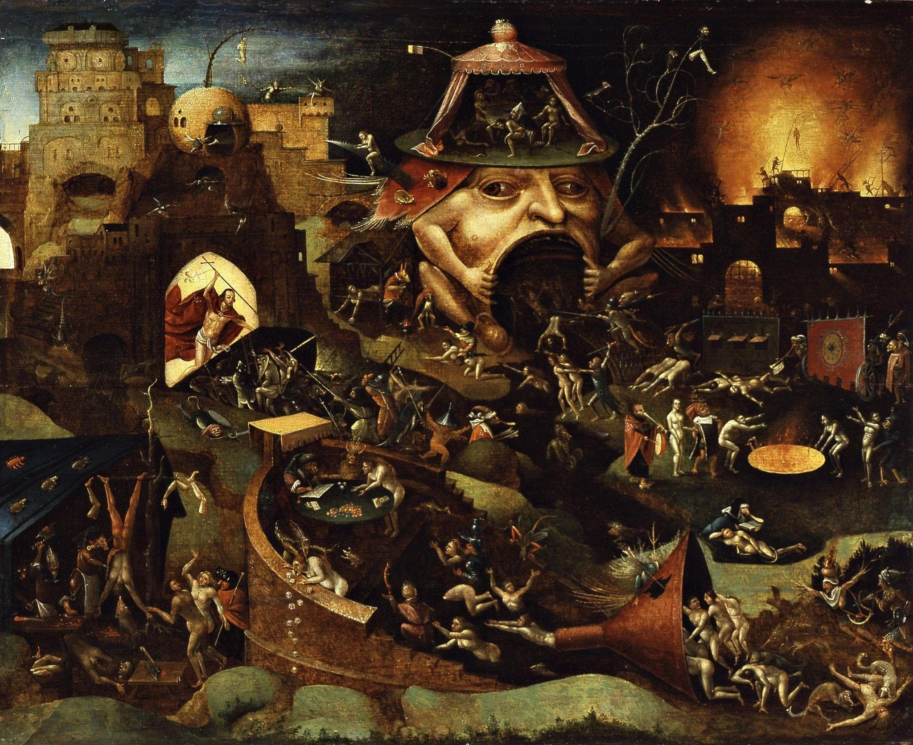

Nothing unclean shall enter heaven.

(Christ In Limbo - Follower Of Hieronymous Bosch, Circa 1450
–1516)
Revelation 21:27
And there shall in no wise enter into it any thing that defileth,
neither whatsoever worketh abomination, or maketh a lie: but they
which are written in the Lamb's book of life.
Thus there is no sin in heaven.
Jesus speaks of a time after death where sins can be forgiven after this
life.
Matthew 12:32And whosoever speaketh a word against the Son of man, it shall be
forgiven him: but whosoever speaketh against the Holy Ghost, it shall
not be forgiven him, neither in this world, neither in the world to
come.
Sins can be forgiven in the world to come?
Must be a place before heaven.
1 Corinthians 3:13-15Every man's work shall be made manifest: for the day shall declare
it, because it shall be revealed by fire; and the fire shall try every
man's work of what sort it is. If any man's work abide which he
hath built thereupon, he shall receive a reward.If any man's work
shall be burned, he shall suffer loss: but he himself shall be saved;
yet so as by fire.
saved through fire.
Isaiah 4:4
When the Lord shall have washed away the filth of the daughters of
Zion, and shall have purged the blood of Jerusalem from the midst
thereof by the spirit of judgment, and by the spirit of burning.
washed away bloodshed through burning.
Isaiah 6:6-7
Then flew one of the seraphims unto me, having a live coal in his
hand, which he had taken with the tongs from off the altar: And he
laid it upon my mouth, and said, Lo, this hath touched thy lips; and
thine iniquity is taken away, and thy sin purged.
cleansing with a burning coal.